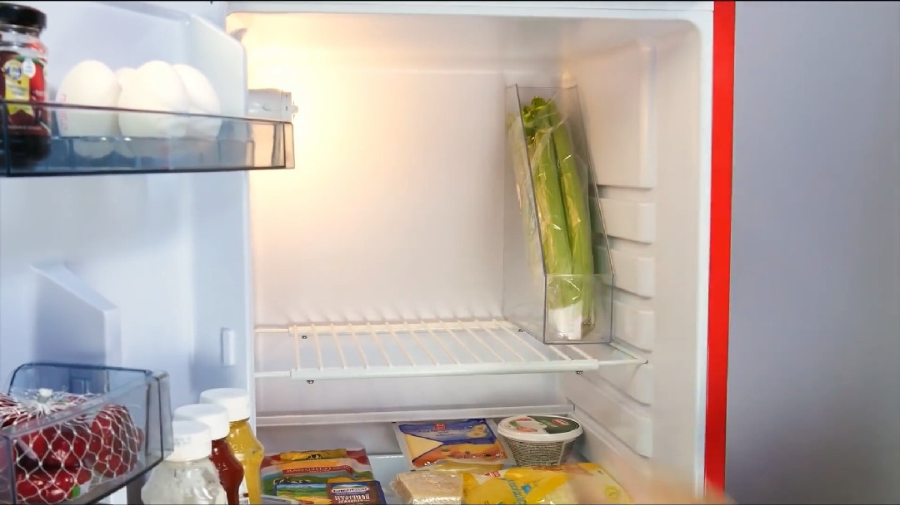
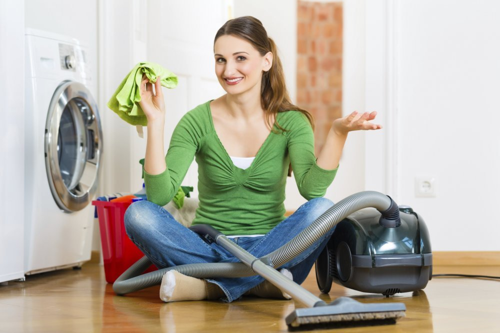

.: Как сохранить чистоту и порядок в доме?
2020.10.11 01:02
Страницы
Главная страница Обо мне Контакты Статьи Академия Здоровья КК Результаты по Здоровью Хочу стать членом КК Бизнес в КК Ступени Здоровьясуббота, 15 июня 2013 г.
Как сохранить чистоту и порядок в доме?
Навести порядок в доме проще,
чем поддерживать в нем порядок.
Вот несколько правил, которые помогут в этом:
Первое правило
Нужно сортировать и избавляться от ненужного!
Избавление от хлама и упорядочивание нужных вещей является важнейшим условием порядка.
Обследуй дом и найди места, где скопилось наибольшее количество хлама.
Посвящай каждый день 15-30 минут для того, чтобы разобрать один такой угол.
Завалам побольше - посвяти больше времени, отложив их напоследок.
Разложи вещи по группам: нужные, нужные редко и ненужные.
Нужные вещи расположи в зоне досягаемости так, чтобы они всегда были под рукой и не требовали длительных поисков.
Для редко используемых вещей выдели соответствующее место так, чтобы они не мешали,
но чтобы каждый член семьи знал, где они лежат.
Ненужные вещи разложи на три кучки: отдать, выбросить и не определено. Сортируя ненужные вещи, постарайся сделать так, чтобы группа вещей, ожидающая своей участи, была самой меньшей.
Избавляйся от вещей без сожаления и побыстрее!
Второе правило
Рационально используй пространство.
Рациональное размещение позволяет держать все необходимые вещи и предметы в непосредственной близости от рабочей зоны и сократить перемещения, отнимающие время.
Например, лучше выделить один шкафчик на кухне для повседневной посуды (тарелок, бокалов, салатниц и пр.), а другой для праздничной, чем хранить все тарелки в одном месте, бокалы в другом и т.д. Так открывать шкафчики придется меньше.
Оптимизируй пространство, убирая сезонные и редко используемые вещи на антресоли, полки в кладовках.
Используй картинки или надписи маркером, помечая полочки и коробочки.
Расставь в ванной и возле компьютера небольшие корзинки для мелкого мусора.
Включись в поцесс, ведь главное здесь твой сугубо индивидуальный подход.
Третье правило
Убирай каждый день понемногу
Выделяй каждый день по 15-20 минут для общей уборки: разложи вещи по местам, протри пыль, протри раковину и кухонную плиту.
Приучи себя и всех своих , сразу же убирать за собой, класть вещи на место.
Положи в местах, подверженных постоянному загрязнению тряпочки или губки, и сразу же протирай место загрязнения.
Приучи родных сразу же мыть за собой обувь.
Четвертое правило
Привлекай к участию в ведении хозяйства
всех членов семьи.
Обсудите на семейном совете, какие работы в принципе необходимо выполнять дома, и кто чем будет заниматься, с учетом их загрузки.
Поощряй домочадцев за выполненное задание добрым словом и улыбкой.
Показывай ценность их вклада в создание уюта в доме.
Запомни, что планирование, мотивация, организация и контроль это тоже работа, и ее необходимо учитывать.
Западные специалисты в области, рекомендуют периодически обмениваться обязанностями, тогда каждый из членов семьи становится более самостоятельным в домашней работе.
Пятое правило
Планируй и контролируй выполнение планов
Домашние дела, финансы (и покупки), подготовка к праздникам и, меню и многое другое все это следует планировать.
Самостоятельно или вместе с семьей составь список домашних дел и если нужно - детализируй их.
Раздели все дела на постоянные или регулярно повторяющиеся и на разовые.
Определи сроки выполнения для каждой.
Назначь исполнителя.
Не стоит все задачи жестко привязывать к конкретному времени. Оставь свободу для творчества.
В итоге получиться :
1 . Расписание домашних дел на неделю с распределением их по дням и датам и указанием ответственного за исполнение.
2 . Список дел, которые стоит выполнить на этой неделе,
но без привязки к конкретному времени.
Это расписание и станет тем документом,
на основании которого можно контролировать выполнение задач.
Пусть Ваш дом будет уютным!
Автор: Unknown на 07:17 Отправить по электронной почте Написать об этом в блоге Опубликовать в Twitter Опубликовать в Facebook Поделиться в Pinterest
Комментариев нет:
Отправка комментария
Следующее Предыдущее Главная страница Подписаться на: Комментарии к сообщению (Atom)
Follow by Email
Translate
Общее·количество·просмотров·страницы
Обо мне
Unknown Просмотреть профильПодпишитесь на
Сообщения Atom Сообщения Комментарии Atom КомментарииПопулярные сообщения
Консервация. Польза или вред? «Зима спросит, где лето было!» Так говорят хозяйки, закручивая очередную баночку огурцов или варенья. Раньше почти каждая семья запасалас... Зачем нужны Бады? Очень актуальный вопрос! Бады. Многие боятся этого слова, как огня. Я встречала таких. А Вы? Причина - элементарное невежество или ложь, к... Осень... пора чистить организм. О чистоте можно много говорить... Чистота рук, мыслей, намерений, языка, волос, тела... Пожалуй о чистоте тела мы говорим лишь в см... Как сохранить чистоту и порядок в доме? Навести порядок в доме проще, чем поддерживать в нем порядок. Вот несколько правил, которые помогут в этом: Запах изо рта Как ни странно, очень много людей имеют дурной запах изо рта, причем даже не подозревают об этом. Проверить это просто: лизните тыльную ... Производство Кораллового Клуба Coral Club International поставляет биологически активные продукты, которые производятся только на лицензированных заводах из высококачес... Грибки, Вирусы, Бактерии ГРИБКИ В ТЕЛЕ ЧЕЛОВЕКА. О.БУТАКОВА http://www.youtube.com/watch?v=9_P61Yz1LTs&feature=related БАКТЕРИИ. О.БУТАКОВА http://www.youtub... Космецевтика Cellution 7 Каждой Женщине так хочется быть красивой и молодой!!! Но бывает ли безопасная косметика? И это первое, о чем Женщина должна задуматься , ... Четыре шага на пути к здоровью КОНЦЕПЦИЯ ЗДОРОВЬЯ КОРАЛЛОВОГО КЛУБА::: 7 этапов зашлакованности 1. Усталость. Внешне здоровый человек чувствует лишь общее утомление это уже свидетельствует о начавшейся зашлаковке нервных каналов...Архив блога
► 2014 (2) ► октября (1) ► февраля (1) ▼ 2013 (44) ► декабря (2) ► октября (1) ► августа (3) ▼ июня (7) Философия здоровья Как Распознать Инсульт? Как сохранить чистоту и порядок в доме? Вся правда о Воде Еще раз о Космоцевтике Кораллового Клуба Вы живете лучше, чем Вы думаете! Чистота в вашем доме! ► мая (5) ► апреля (4) ► марта (8) ► февраля (11) ► января (3) Тема "Венецианское окно". Технологии Blogger .- Как сохранить порядок в доме.
- Как сохранить порядок в доме наведение порядка в квартире ...
- 9 советов, как поддерживать порядок в доме | homify | homify
- 5 методов Как сохранить порядок в доме - 100500metod
- порядок в доме? да ну, что вы... у меня трое детей... А ...
- Как навести порядок в доме за 28 дней: strana_flymamia ...
- Порядок в доме и в голове | karpachoff.com
- Как раз и навсегда навести порядок в доме
- Шикарные идеи как сохранить порядок в доме » 1000prikolov ...
- Как провести уборку в квартире, доме: периодичность и ...
- Как сохранить порядок в доме.
Возможно, вы не раз удивлялись, как в некоторых домах всегда царствуют порядок и чистота. Вы думаете, что для этого нужно много времени, но это не всегда так. Просто нужно упорство и выполнение рутинных действий ...
- Как сохранить порядок в доме наведение порядка в квартире ...
Уборка в доме – это не всегда приятное занятие, однако проводить ее необходимо. Как правильно подойти к этому вопросу и обеспечить максимальную чистоту в жилом
- 9 советов, как поддерживать порядок в доме | homify | homify
Все о том, как отключить газ в квартире для тех, кто хочет перейти с газа на электричество или отказаться от газа по другим причинам. Преимущества и недостатки такого решения, порядок действий, документы, возможнфе ...
- 5 методов Как сохранить порядок в доме - 100500metod
Как сохранить порядок в доме. Проблема сохранения уюта и порядка в доме волнует многих женщин. Так сложно в повседневной суете найти время для уборки и разгребания накопившихся завалов.
- порядок в доме? да ну, что вы... у меня трое детей... А ...
Скоро весна! Значит пора вздохнуть поглубже. Чувствуете, что нечем дышать? ПЫЛЬ!!! Итак генеральная уборка ужасает своими масштабами...сразу опускается одна рука, потом вторая.... И глаза хочется закрыть, чтоб не видеть ...
- Как навести порядок в доме за 28 дней: strana_flymamia ...
Как создать такую атмосферу в доме, чтобы каждый член семьи чувствовал себя в нём хозяином, заботился о чистоте и уюте и поддерживал порядок. Вот тут у меня затык.
- Порядок в доме и в голове | karpachoff.com
Как сохранить порядок в доме Работа, готовка, стирка, глажка, уроки с детьми – это далеко не все, чем занимается женщина в течение одного дня.
- Как раз и навсегда навести порядок в доме
Навести порядок в доме проще, чем поддерживать в нем порядок. Вот несколько правил, которые помогут в этом: Первое правило Нужно сортировать и избавляться от ненужного!
- Шикарные идеи как сохранить порядок в доме » 1000prikolov ...
Как похудеть в домашних условиях(без рекл 5 методов Как сохранить порядок в доме 5 лучших методов борьбы с похмельем УТОПЛЕНИЕ: ВИДЫ, ПРИЗНАКИ ,Первая помощь.
- Как провести уборку в квартире, доме: периодичность и ...
Шикарные идеи как сохранить порядок в доме. Дома у каждой девушки, как вы знаете, полным-полно всяких мелочей. И все кисточки, сережечки, резиночки, карандашики непременно необходимо для ...
Возможно, вы не раз удивлялись, как в некоторых домах всегда царствуют порядок и чистота. Вы думаете, что для этого нужно много времени, но это не всегда так. Просто нужно упорство и выполнение рутинных действий ...
Уборка в доме – это не всегда приятное занятие, однако проводить ее необходимо. Как правильно подойти к этому вопросу и обеспечить максимальную чистоту в жилом
Все о том, как отключить газ в квартире для тех, кто хочет перейти с газа на электричество или отказаться от газа по другим причинам. Преимущества и недостатки такого решения, порядок действий, документы, возможнфе ...
Как сохранить порядок в доме. Проблема сохранения уюта и порядка в доме волнует многих женщин. Так сложно в повседневной суете найти время для уборки и разгребания накопившихся завалов.
Скоро весна! Значит пора вздохнуть поглубже. Чувствуете, что нечем дышать? ПЫЛЬ!!! Итак генеральная уборка ужасает своими масштабами...сразу опускается одна рука, потом вторая.... И глаза хочется закрыть, чтоб не видеть ...
Как создать такую атмосферу в доме, чтобы каждый член семьи чувствовал себя в нём хозяином, заботился о чистоте и уюте и поддерживал порядок. Вот тут у меня затык.
Как сохранить порядок в доме Работа, готовка, стирка, глажка, уроки с детьми – это далеко не все, чем занимается женщина в течение одного дня.
Навести порядок в доме проще, чем поддерживать в нем порядок. Вот несколько правил, которые помогут в этом: Первое правило Нужно сортировать и избавляться от ненужного!
Как похудеть в домашних условиях(без рекл 5 методов Как сохранить порядок в доме 5 лучших методов борьбы с похмельем УТОПЛЕНИЕ: ВИДЫ, ПРИЗНАКИ ,Первая помощь.
Шикарные идеи как сохранить порядок в доме. Дома у каждой девушки, как вы знаете, полным-полно всяких мелочей. И все кисточки, сережечки, резиночки, карандашики непременно необходимо для ...
 